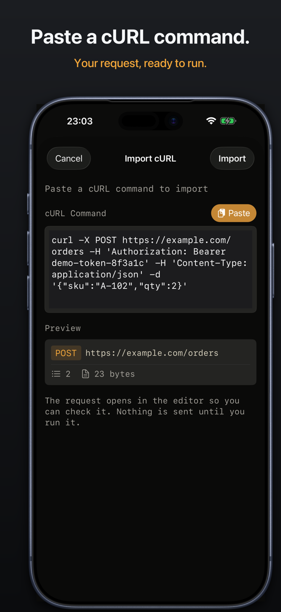
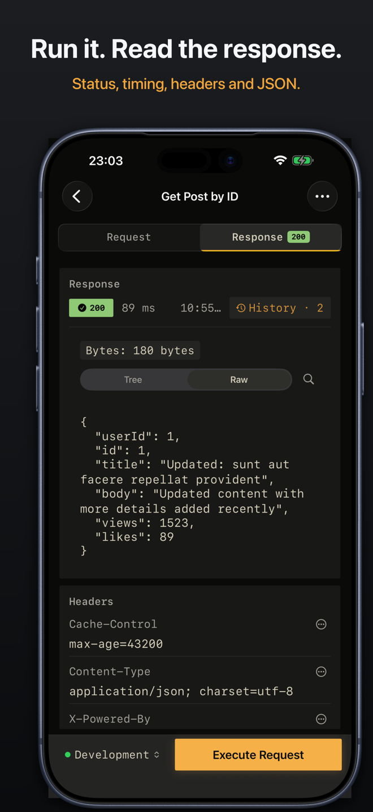
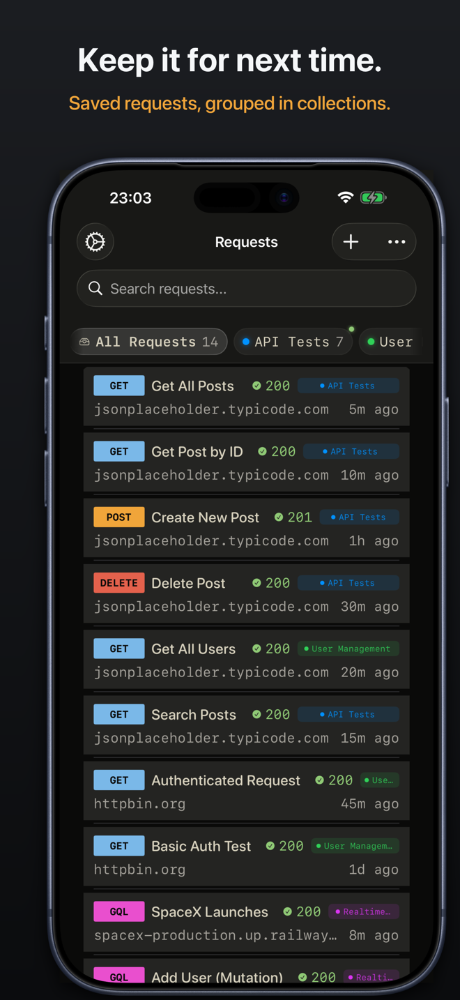
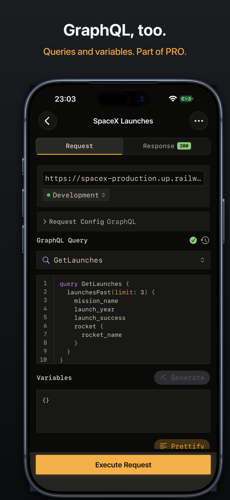
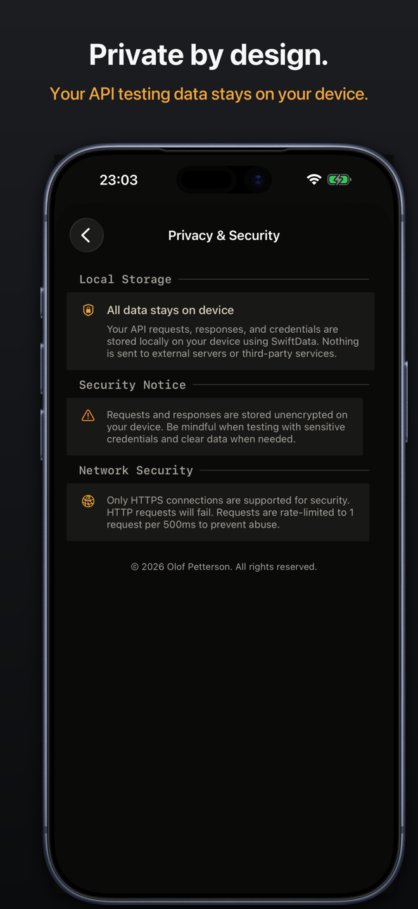

1. Reuse your request
Paste a cURL command and get an editable request. Free.
ProbePad is a native API client for iPhone and iPad. Paste a cURL command, run it, and read what came back.

Paste a cURL command and get an editable request. Free.

Status, timing, headers and JSON — as a tree or as raw text.

Save requests in collections, look at response history, and diff two responses. Free.

PRO is a one-time lifetime purchase, or yearly with a seven-day free trial. Prices for your region are shown in the app.
Your requests, responses and secrets are stored on your device. No account, no analytics, no third-party SDKs. Requests go from your device straight to the API you are calling. ProbePad does not sync between devices.

With PRO you can mark a request as watched. ProbePad runs it again in the background and notifies you if it fails. iOS decides when background checks run, so this is not real-time monitoring — ProbePad shows when each endpoint was last checked.
Home Screen and Lock Screen widgets show a saved request's last status. Free.
Paste a cURL command, try an example request, or import a collection — right from first launch, and again whenever your request list is empty.
The cURL import sheet has a Paste button and says plainly that nothing is sent until you run the request yourself.
Postman and OpenAPI import are now in the + menu as well as in Settings.
The PRO screen opened from Settings now shows what PRO adds, instead of leading with a single feature.
Lifetime
US$19.99 once. Never renews.
Yearly
US$9.99 a year, with seven days free. Cancel any time in Settings.
Prices shown are US dollars. Your region's price appears in the app.
Everyone who bought ProbePad before v1.6 keeps every PRO feature permanently, at no extra charge — including everything new in v1.6. There is nothing to buy again and nothing to upgrade.